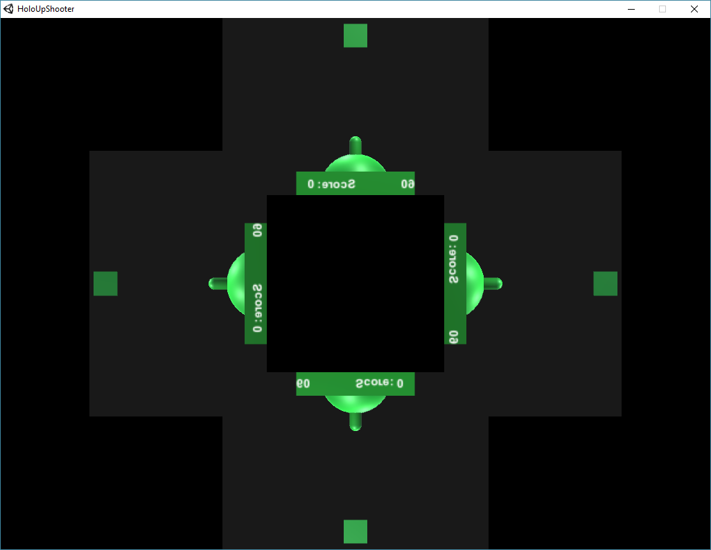
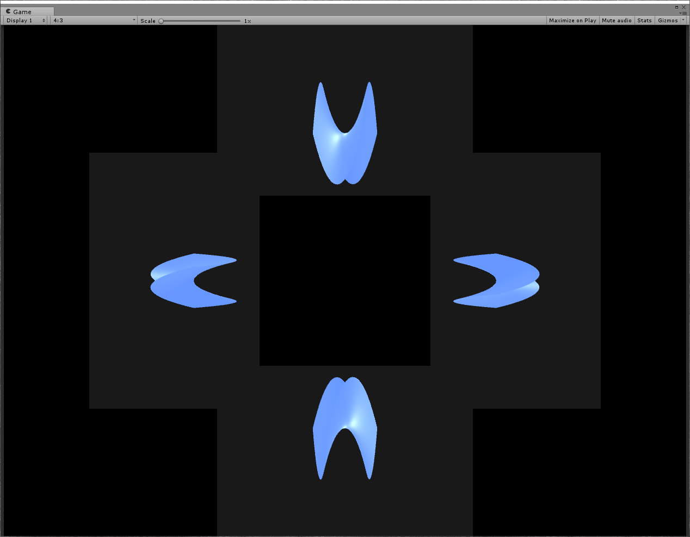

William A Stevens V
Maker, Coder, Dreamer
- I make things because I enjoy learning.
- I ask questions because I am curious.
- I solve problems because I am human.
'Holographic' Projection

I've seen a lot of tutorials online about how to make a phone sized reflective prism for projecting 'holograms' (not technically a hologram, but creates the illusion of one). However, they were too small to be very interesting, and I couldn't find any software to render a object properly. As a result, I created a 4-sided reflective prism from 8"x10" Lexan sheets, and wrote software to render an object in the proper perspectives.
Software
Holo UpShooter
 Demos potential for interactive game-play on reflective prism.
Both players must cooperate to aim from different perspectives.
Holographic Graphing
 Procedurally generated mesh from a 3D equation.
Used to visualize surfaces for my multi-variable calculus course.
Made an asset package containing reflective prism rendering prefab.
OpenGL Rendering Software

Uses multiple glViewports to render the object onto the same screen from different perspectives.
Normalizes the size of an object to properly fit on the screen.
Adjustable distance and rotation.